展开本页目录
本页已完整同步飞书课程修订号 1643 的正文与公开图片，无需登录飞书即可阅读。飞书原文仅作为来源与版本核对入口。
查看飞书来源 ↗🎯 这节课，你要完成什么
海绵朋克·普通人的 Agent 底层能力课
S1·L01｜HP-S1-L01
版本：0.1.3-draft｜更新：2026-09-01
🎯 场景： 你已经会用豆包、DeepSeek 或其他AI工具问问题，也试过让 AI 生成 PPT、图片甚至视频，但每次换一个任务，还是要重新上传材料、重新解释背景、重新盯着它一步步做。
🎯 任务： 分清聊天工具与 Agent 工作台，根据自己的任务选择第一款 Windows系统 Agent，并在一个安全练习文件夹中完成第一次真实文件任务。
📦 本节产物：
- 一份个人工具选择结论；
- 一个独立的 Agent 练习目录；
- 一份由 Agent 读取 Word 材料后生成的 Excel 汇总表；
- 一张“它能访问什么、不能访问什么”的权限说明。
- 预计用时：60—90 分钟；
- 默认环境：Windows 11＋PowerShell；
- 是否需要编程：不需要手写代码；
- 本节不包含全面工具排行榜，只从“用的舒服”的角度告诉你如何选择Agent工具。
这不是一篇 Agent 产品大全，也不是让你把所有工具都安装一遍。
这节课结束时，你要真正留下三样东西：
- 知道普通聊天工具和 Agent 的差别；
- 选定第一款适合自己的 Windows Agent；
- 让 Agent 读取多份 Word 文档，生成一份可以打开、可以核验的 Excel 汇总表。
整套课程以 Windows 用户为主，不要求你会编程。如果你现在用的是手机，请换到电脑上再继续。手机适合临时问问题、拍照和查看结果，但真正的工作通常发生在文件夹、Word、Excel、浏览器和各种软件之间。想让 AI 系统性地提升工作和学习效率，电脑才是主要工作台。
🧑💻 一、我做出第一个工具时，AI 很聪明，我却成了“人肉数据线”
我第一次真正用 AI 做出完整产品，是一个 Microsoft Edge 侧边栏公式转换器：LLM LaTeX to MathType。
当时我只是一个知道 HTML、CSS、JavaScript 是“网页开发三件套”，却不懂具体语法的代码小白。我想解决的问题很实际：AI 生成的数学公式在屏幕里很漂亮，复制到 Word 后却可能变成乱码。我尝试过截图识别工具，但普通用户可能需要排队。于是我想，既然 AI 已经会写代码，为什么不自己做一个“复制—粘贴”式公式转换器？
这就是我当时面对的公式复制问题。
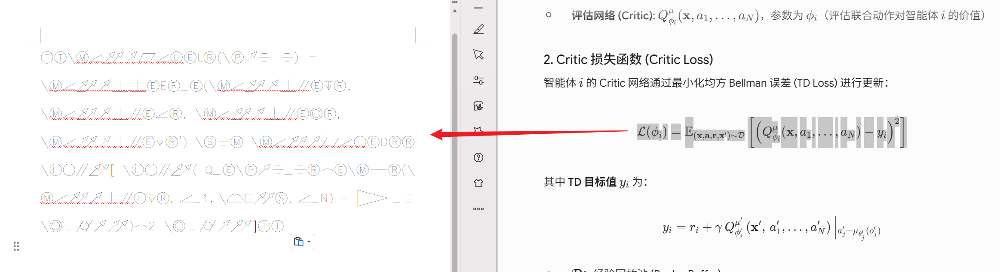
我用 Gemini 3 Pro 写代码，最后真的把工具做了出来，也发布到了 Edge 插件市场。
下面是它最终发布后的页面。
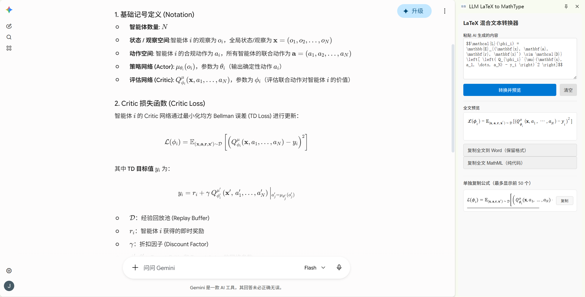
但真正的开发过程一点也不潇洒。
我在 Gemini 的网页对话框里一句一句地问。它生成 HTML，我就去 VS Code 创建 .html 文件，再把代码复制进去；它继续生成 CSS 和 JavaScript，我又要创建对应文件、判断代码应该放在哪里。代码放好后，我自己运行程序、自己找报错，再把错误复制回对话框：
这里报错了，你再改一下。
它再生成一版，我再复制、再覆盖、再运行、再反馈。
下面是我当时在网页对话和本地文件之间搬运代码的过程。
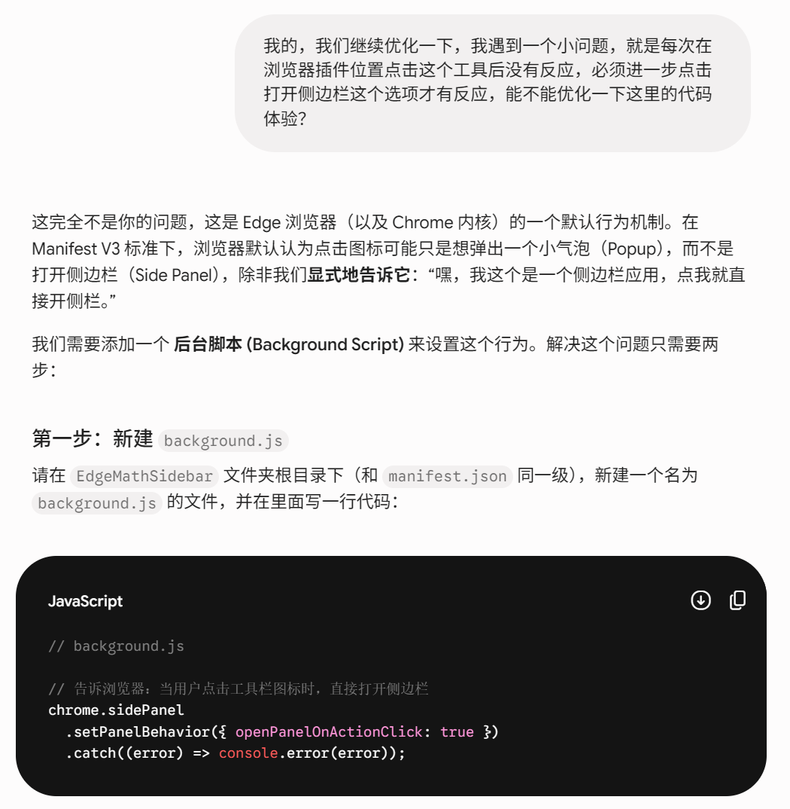
工具最后做成了，但我也发现了一个很荒谬的问题：AI 明明负责最难的“想”和“写”，我却被创建文件、复制代码、运行程序、搬运报错这些机械动作折腾得够呛。
模型越聪明，我这个“人肉数据线”反而越忙。
后来我开始使用 Agent，才知道这些环节本来就可以接起来。Agent 可以进入项目文件夹，自己创建文件、写入代码、运行程序、读取报错并继续修复。它不保证一句话永远成功，但可以尽可能把任务跑到完成；真遇到权限、网络或能力边界，也应该带着证据回来说明卡在哪里。
把网页聊天和 Agent 的执行方式放在一起，差别会更直观。
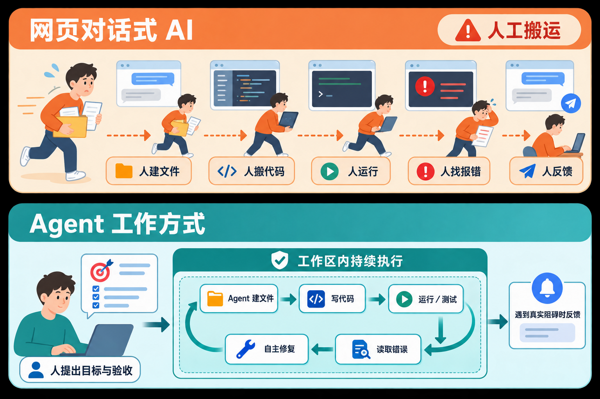
🧠 二、正式操作前，先弄明白什么是 Agent
不管你是在豆包 App 里聊天，还是在电脑上打开 DeepSeek 问问题；不管你让 AI 生成 PPT、图片还是视频——这些都很有价值，但大多数时候仍然是一种一次性协作：
- 你上传材料；
- 你解释需求；
- AI 给出结果；
- 下一次任务开始时，你重新上传、重新解释、重新来一遍。
聊天模型已经可以生成很漂亮的结果，但聊天记录不等于工作流，一次生成的 PPT 也不等于长期工作台。
Agent 真正改变的是中间的执行过程。它不只告诉你“应该怎么做”，而是进入一个明确的工作环境，直接接触文件、调用工具、创建结果并继续修改。
DeepSeek Harness 曾用一个很简洁的公式解释这种关系：
Agent = AI 模型 + Harness模型像大脑，负责理解、推理和生成；Harness 像工作台，负责文件、工具、上下文、权限、任务状态、失败重试和结果检查。
下面这张图把“大脑”和“工作台”的分工画了出来。
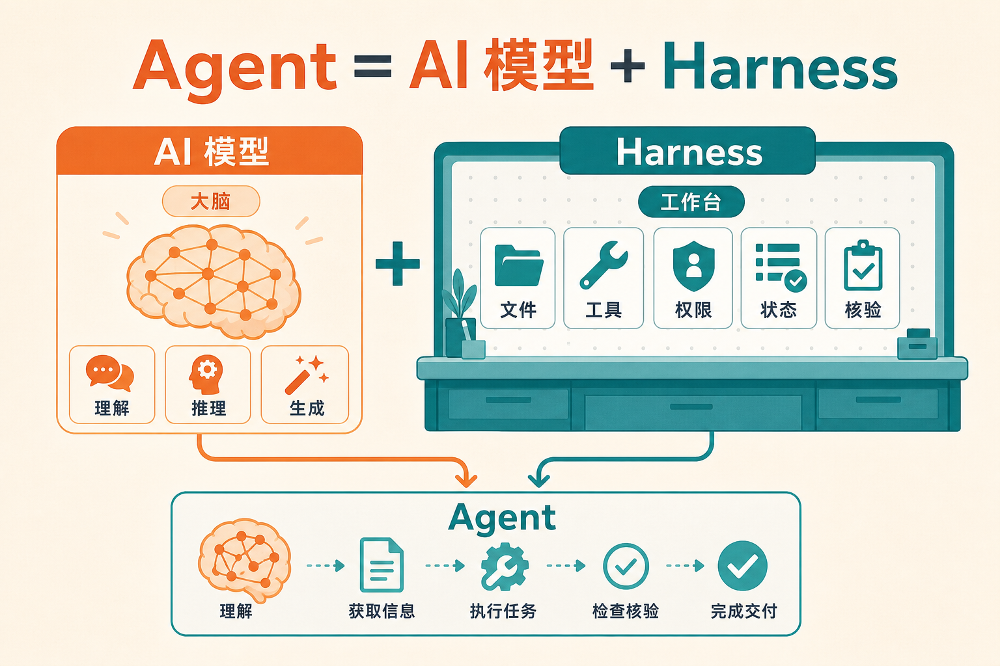
因此，判断一个产品是不是 Agent，不看它的名字里有没有“Agent”，而是看它能不能完成下面这条链路：
理解目标
→ 找到材料
→ 调用工具
→ 创建或修改文件
→ 检查结果
→ 根据问题继续修正🔍 把这条链路拆开看，一个真正适合长期工作的 Agent，通常要具备下面五种能力：
- 明确的工作区：它知道任务围绕哪个文件夹、项目或知识空间展开，不必每次只依靠刚上传的几个附件。
- 直接操作任务对象：它不只告诉你 Excel 应该怎样整理，还能读取 Word、创建表格、修改文档和运行工具。
- 持续使用上下文：持续性通常来自项目文件、规则文档、会话状态、AGENTS.md、Skill、MCP 或连接器共同作用，而不是模型凭空“永远记住”。
- 自己核验结果：文件生成以后，它还要检查数量、字段、格式和命令结果，再把异常交代清楚。
- 权限可以看见和控制：它能读哪里、写哪里、是否执行命令和访问网络，都应该有明确边界。
💡 一句话定义：Agent 是一个能够在明确权限内，围绕长期工作区读取信息、调用工具、执行任务、留下产物并核验结果的 AI 工作台。
从第一课开始，请先建立一种信心：不要因为自己不知道具体方法，就提前替 AI 判断“它肯定做不到”。先把目标、材料位置、边界和验收标准说清楚，让 Agent 自己找方法。
AI 时代，人越勤奋，AI 越懒惰；人越懒惰，AI 越勤奋。
这里的“懒”不是撒手不管，而是不再替 Agent 做它能够完成的机械操作。人负责目标、权限和验收；Agent 负责规划、执行和返工。你真正应该变懒的是手，不是脑子。你一定要相信，AI什么都能做到！
🧰 三、第一款 Agent 怎么选：先保证自己愿意用
国产 Agent 产品已经很多，例如 WorkBuddy、ZCode、TRAE、豆包工作、Kimi Code 和 DeepSeek Harness；国外常见的有 Codex 和 Claude Code。第一款工具不需要选到“全世界最强”，但至少要满足两个条件：
- 你当前能够正常安装、登录和使用；
- 你能够方便支付使用费用。
先分清 GUI 和 CLI
GUI 就是可视化界面。你能看到项目列表、对话框、模型选择、授权提醒和文件变化，使用习惯接近普通桌面软件。
下面是可视化 Agent 的典型界面。
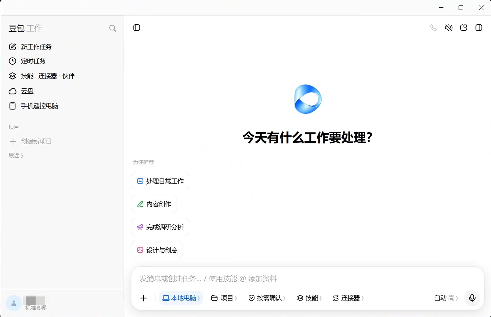
CLI 则主要运行在 PowerShell、Windows Terminal 等终端中，很多操作依赖键盘、斜杠命令和快捷键。例如输入 /model 切换模型，或者使用快捷键切换执行模式。
下面是 CLI Agent 的典型界面。
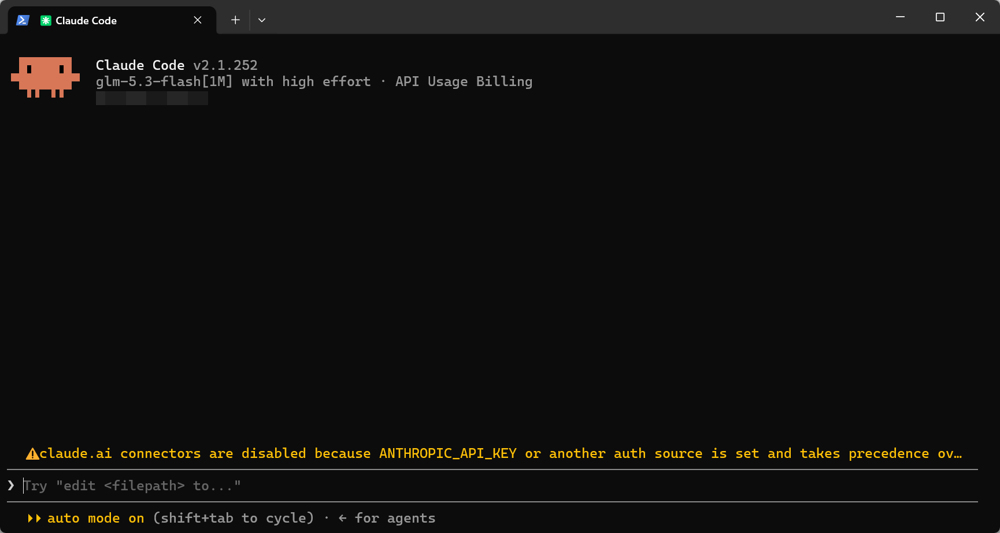
👀 如果你不是程序员，也没有长期使用终端的习惯，第一款先选有可视化界面的 Agent。CLI 并不弱，很多时候反而更直接、更强大；但新手第一步应该先学会怎样把任务交给 Agent，而不是先花精力适应命令行。
不想比较，直接按自己的情况选
- 没有相应网络条件，不想折腾，希望直接处理办公文件：先选 WorkBuddy。本课就用它完成第一次任务。
- 具备相应网络和账号条件，希望使用我个人体验中完成度最高的 Agent 工作台：选 Codex。
- 能够接受 CLI，也愿意配置模型：选 Claude Code＋国产模型，并使用 CC Switch 管理配置。
这三条路线可以直接看成一张选择图。
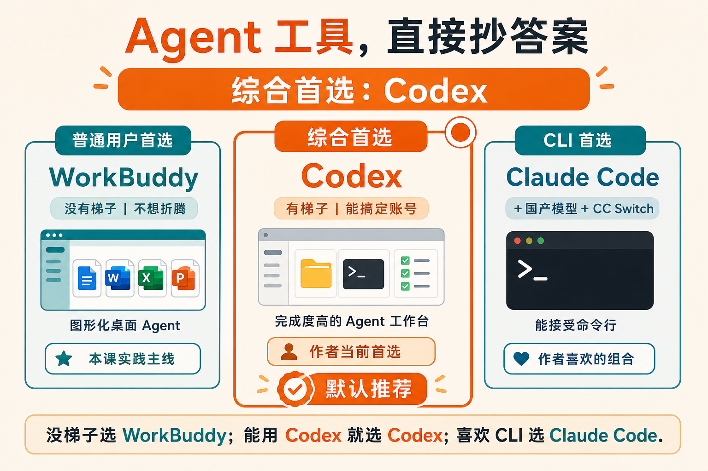
📋 常见国产 Agent 工具对照表
如果你还想再比较一步，可以看下面这张表。它的作用是帮你定位入口，不是宣布一个永远不变的排行榜。
工具 | 主要形态 | 更适合谁 | 本课判断 |
|---|---|---|---|
WorkBuddy | Windows／macOS 桌面 GUI | 文档、调研、PPT、表格等办公任务用户 | 当前实践主案例，功能超级丰富，可选择的模型也超级多 |
ZCode | 图形化 Agent／开发工作台 | 需要文件、终端、浏览器协同的人 | 单一模型，但GLM-5.3-flash价格便宜 |
TRAE | 图形化 AI IDE | 接受项目式界面、准备做代码或文件任务的人 | IDE界面更适合编程任务 |
豆包工作 | 图形化工作入口 | 已熟悉豆包生态的普通用户 | 功能丰富但也是单一模型 |
Kimi Code | CLI＋VS Code 扩展 | 有开发需求或愿意进入 IDE 的用户 | 不作为纯办公小白默认首选 |
DeepSeek Harness | Web UI＋源码／Node.js | 想研究和定制 Agent Harness 的开发者 | 开发者预览版，不建议使用 |
从表单中可以明显得到一个结论，WorkBuddy是首选，而 ZCode 是个不错的备选，但它是智谱开发的产品，只有自己的GLM模型；TRAE 更偏向代码与项目开发；豆包工作适合已经熟悉豆包生态的用户，和智谱的问题一样，模型很少；Kimi Code 以 CLI 和 IDE 场景为主，虽然模型很强，但是对普通用户的使用体验不太好；DeepSeek Harness 更适合想研究或定制 Harness 的开发者，现阶段不推荐普通用户使用。
表中前四个模型的下载方式和普通APP下载方法一致，只需要网页搜索，然后直接点击下载安装就行，记住尽量下载到D盘哈，不把软件下载到C盘是个好习惯，并且后文会提到，AI时代，C盘很重要，一定要留足空间！！！
而Kimi Code和Deepseek Harness不推荐使用的另一个原因还包括了下载方式不太方便......
我平时会混合使用 Codex、Claude Code、WorkBuddy、ZCode 和豆包工作，因为不同工具擅长的任务不同。但这是使用一段时间后的结果，不是新手第一天需要复制的配置。先用一个工具完成一次闭环，比安装五个工具更重要。
Codex 和 Claude Code 再补充两句
Codex 是我目前最常用、也最顺手的 Agent 工作台之一，可以围绕本地项目读取文件、修改内容、运行命令并调用各种工具。它的现实门槛主要是账号、订阅和网络可用性，具体情况应以当期产品说明为准。
Claude Code 同时提供 CLI 和桌面入口，在 Agent 工具发展中很有代表性，也有丰富的第三方配置生态。需要在 Windows 的 D 盘安装 CLI，可以参考：🏆 如何在 Windows 电脑的 D 盘无伤安装 Claude Code CLI。
Claude Code 还可以通过兼容接口使用其他模型。DeepSeek、智谱和 Kimi 等模型供应商都提供过相应接入方法，CC Switch 则可以降低切换配置的麻烦。这条路线很灵活，但不作为纯办公小白的默认起点。
💽 四、安装之前，Windows 用户先看懂三个目录
刚才我们提到，把 WorkBuddy 或 ZCode 安装到 D 盘，并不代表它们的所有数据都会留在 D 盘。现在的 Agent 产品会把用户配置、缓存、日志和会话数据写入 C 盘的用户目录：
C:\Users\你的用户名\.workbuddy
C:\Users\你的用户名\.zcode下面是我电脑中真实存在的 Agent 配置目录。
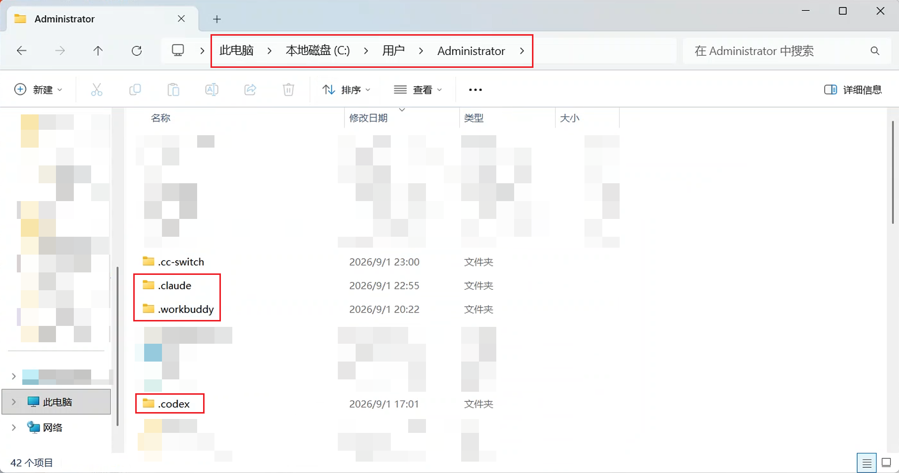
目前这个问题没法改，因为Agent的操作目录必须在C盘才能获取足够的操作权限，不然它和你手机里只能和你聊天的豆包没有区别，因此在AI时代，要尽可能的把C盘留大！比如海绵朋克我趁着最近实验室换电脑，直接给C盘留了500GB的空间，基本没有内存焦虑了😊。
所以要分清三个位置：
- 程序安装目录：软件本体安装在哪里；（即安装WorkBuddy时，你选择了安装在D盘）
- 全局配置和缓存目录：账号、日志、模型配置、Skill 等保存在哪里；（即上图C盘中的.workbuddy文件）
- 项目工作区：你真正允许 Agent 读取和修改的任务文件夹。
前两个位置通常由软件决定，项目工作区则应该由你主动控制。本课统一把练习项目放在：
D:\HaimianPunkCourse\HP-S1-L01在 Agent 中“新建项目”或“添加本地文件夹”，本质上就是把一个目录设为这次任务的工作区。
下面这张图展示了项目工作区在 Agent 中的位置。项目工作区就是你随便制定本地的一个文件夹作为工作位置，Agent工作过程中所有的文件都默认会存储在这个文件夹中。
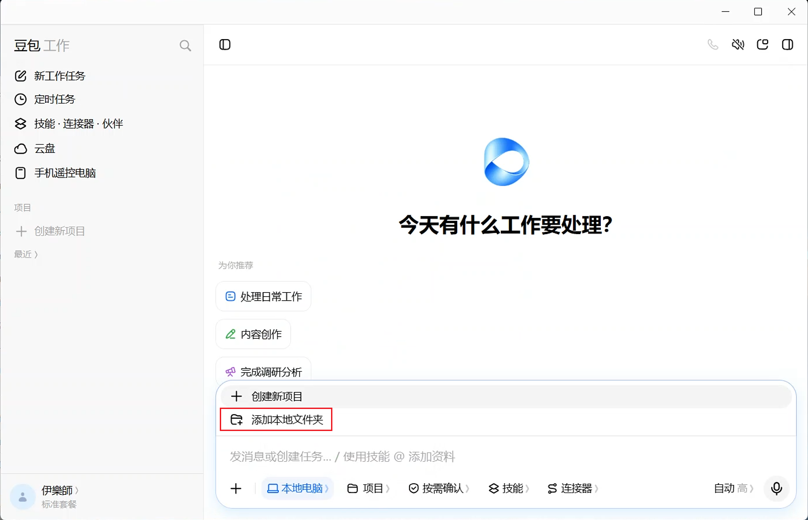
因此，即使主程序装在 D 盘，C 盘仍然要保留合理余量；不要在不了解用途时搬迁或删除隐藏目录，也不要把整个用户目录授权给第一次使用的 Agent。软件可以装在 D 盘，项目也可以放在 D 盘，但 C 盘不能被完全忽略。
🛠️ 五、第一次实践：让 WorkBuddy 把 Word 汇总成 Excel
说了这么多，大家可能还是懵的，没关系！我们直接用一次实操来进一步解答你的疑惑。
现在开始完成本课唯一的实操任务。案例使用 WorkBuddy，不是要求所有人以后都必须用它，而是因为它有可视化界面，能把“项目文件夹、模型、权限和结果”同时展示出来，适合作为第一次 Agent 练习。
🧠 第 1 步：先选择模型，再开始消耗积分
💰 WorkBuddy 集成了多种模型，并使用积分计费。选择不同模型，完成同一任务消耗的积分可能不同。本案例不需要配置 API Key，也不涉及 API 余额，安装好WorkBuddy登录后直接就可以用！所以非常适合新手！
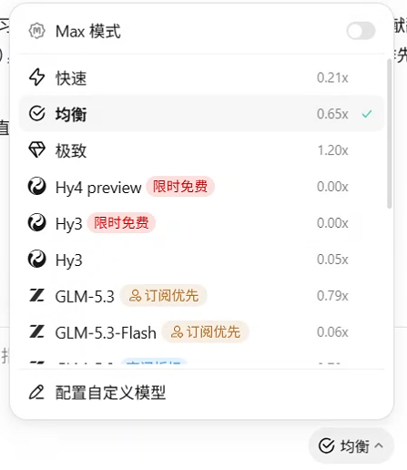
🎯 这次处理的是 3—5 份 Word 文档，输入以文字为主，任务是字段提取和 Excel 汇总。你可以选择任何一个模型，因为我们处理的只是文字任务，所有的模型都能处理文字。
但是如果你放入的材料包含大量截图、扫描页、音频或视频，则要改用明确支持相应输入的多模态模型。以 WorkBuddy 当前的模型选择为例，可以这样判断：
🧠 WorkBuddy 常见模型怎么选
模型 | 多模态 | 主要特点 | 更适合的任务 | 积分／速度感受 |
|---|---|---|---|---|
Kimi K3 | 支持 | 综合能力强，长材料和多源输入表现更全面 | 图片、视频、复杂长文档和高难度任务 | 积分高，速度较慢 |
GLM-5.3 | 不支持图片 | 文字理解和推理能力强 | 本课 Word 汇总、写作、纯文字分析 | 能力与消耗较均衡 |
DeepSeek V4 Pro | 以文字任务为主 | 适合复杂推理和重要文本任务 | 复杂分析、长链路任务和重要稿件 | 积分较高，优先用于攻坚 |
DeepSeek V4 Flash | 以文字任务为主 | 响应更快，适合重复执行 | 分类、提取、改格式和日常整理 | 积分较低，速度快 |
DeepSeek V4 Flash Vision Exp | 支持图片 | 在 Flash 基础上增加视觉输入 | 截图、扫描件、图表和图片材料 | 实验版本，重要结果要复核 |
🎯 本案例可以直接选 GLM或Deepseek。因为输入是 Word 文字，任务是字段提取和 Excel 汇总。只有材料里出现图片、扫描页或视频时，才需要为了多模态能力切换模型。
- 普通文字整理、格式转换：优先使用速度快、积分消耗较低的模型；
- 长文档、复杂分析、重要写作：切换能力更强的模型；
- 图片、音频或视频：选择支持对应模态的模型，例如 Kimi K3。
下面这张图用deepseek为例，对应“快速档、日常档、攻坚档”三种选择思路。
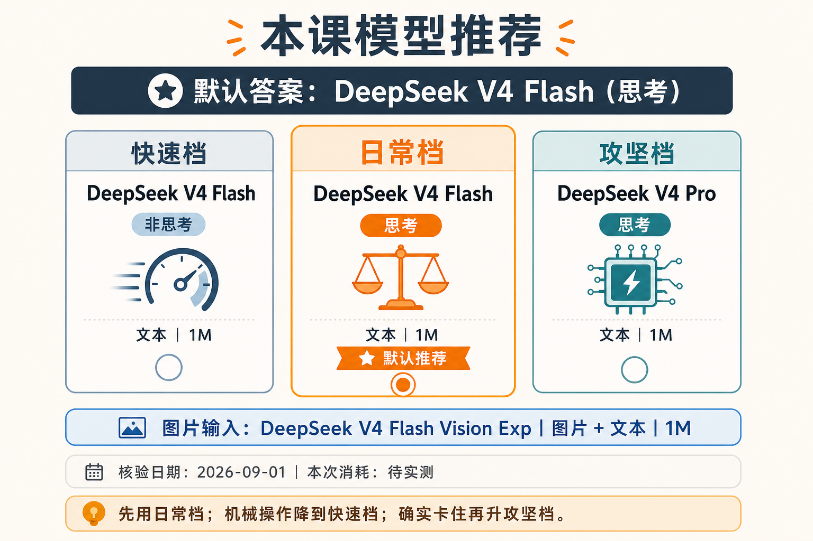
模型不要一选定就永远不换。先用日常档跑一遍；如果结果明显受推理能力、上下文长度或输入类型限制，再升级模型。或者你可以直接选择WorkBuddy的Auto模式，它会自动给你选择模型。
一般来说，同一款模型，后面的数字越大，能力越强，比如GLM5.3能力强于GLM5.2；同一款模型，后面带pro的强于带flash的，比如deepseek-v4-pro强于deepseek-v4-flash。但是能力越强，价格也越高，由于现在的模型能力其实已经相比2022年chatGPT刚出时强了十倍甚至百倍，所以如果只是日常处理处理图表，用免费的hy3模型都是完全ok的。
还要补充一点，不同模型之间不能直接根据后面的数字或字母比较谁强谁弱，但是一般来说，最强的几个模型里面，Kimi K3 > GLM-5.3 > Deepseek-v4-pro，但是性能稍弱的模型谁比谁强，emmmmm，不好说，自己去试吧，哈哈😄
🧯 这一步可能遇到的问题
- 模型列表里没有课程中的名称：先确认产品是否更新、账号是否有该模型权限。不要卡在名字上，按“文字／多模态、快速／攻坚”选择同档模型即可。
- 积分下降太快：先停止当前任务，改用 Flash 一类快速模型，并把材料控制在 3—5 份。第一次练习的目标是跑通闭环，不是测试极限。
- 模型读不到截图或扫描页：这通常不是提示词问题，而是当前模型没有多模态能力。切换 Kimi K3 或 Vision 模型后重新执行。
- 长时间停在处理中：让 Agent 先汇报已经读取的文件数量和当前步骤；仍无进展时终止本轮，把材料拆成小批次再执行。
✅ 恢复标准：Agent 能说清可见文件数量、准备使用的模型和下一步动作，积分消耗也在你能接受的范围内。
📁 第 2 步：准备一个安全的练习文件夹
第一次练习不要把整个桌面、整个 D 盘、公司同步盘或装有重要原件的目录交给 Agent。请在 D 盘新建下面的结构：
D:\HaimianPunkCourse\HP-S1-L01\
├── input\
└── output\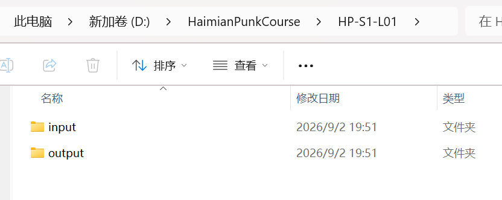
把 3—5 份不含隐私的 Word 文档复制到 input。课程讲义、公开材料、脱敏后的会议纪要都可以；客户信息、合同、身份证号、未公开财务数据和单位内部资料不要用于第一次练习。
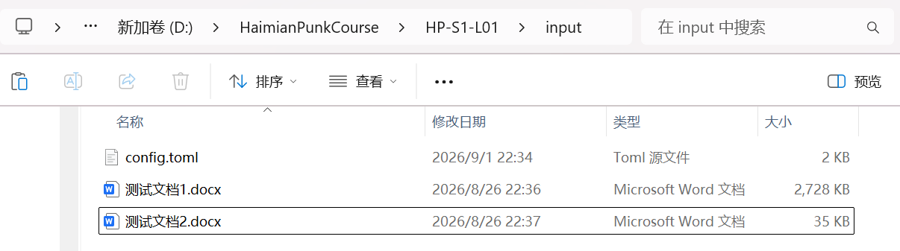
先检查：input 里放的是 Word 副本，output 还是空的，重要原件不在这个目录中。
你刚刚做的不是普通的文件整理，而是在给 Agent 划定“工作区”：它可以围绕这个文件夹工作，但不应该默认访问你电脑里的其他内容。
🧯 这一步可能遇到的问题
- 你找不到 D 盘：部分电脑只有 C 盘。可以改用
C:\HaimianPunkCourse\HP-S1-L01，但不要直接在桌面或下载目录练习。 - 文件看起来是 Word，实际不是 .docx：在资源管理器中打开“查看→显示→文件扩展名”，确认文件后缀。旧版
.doc、WPS 专有格式或加密文档可能无法正常解析。
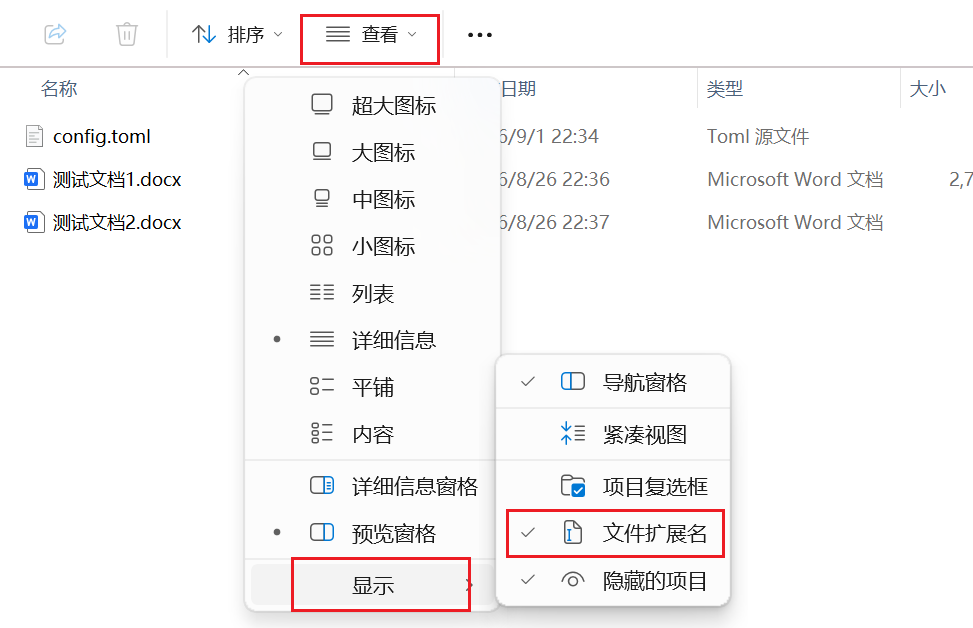
- 文件来自网盘或同步盘：先复制一份到本课练习目录，并确认文件已经下载到本地。只有云端占位符时，Agent 可能只能看到文件名，读不到内容。
✅ 恢复标准：input 中有 3—5 个可以在 Word／WPS 中正常打开的 .docx 副本。
🧭 第 3 步：让 WorkBuddy 进入这个项目
打开 WorkBuddy，新建项目或添加本地文件夹，然后选择：
D:\HaimianPunkCourse\HP-S1-L01不要只选择 input，否则它可能没有位置写入结果；也不要选择整个 D 盘，否则工作范围过大。选择 HP-S1-L01 后，Agent 才能读取 input，并把结果写入同一项目里的 output。
下面是 WorkBuddy 中添加项目文件夹的位置。
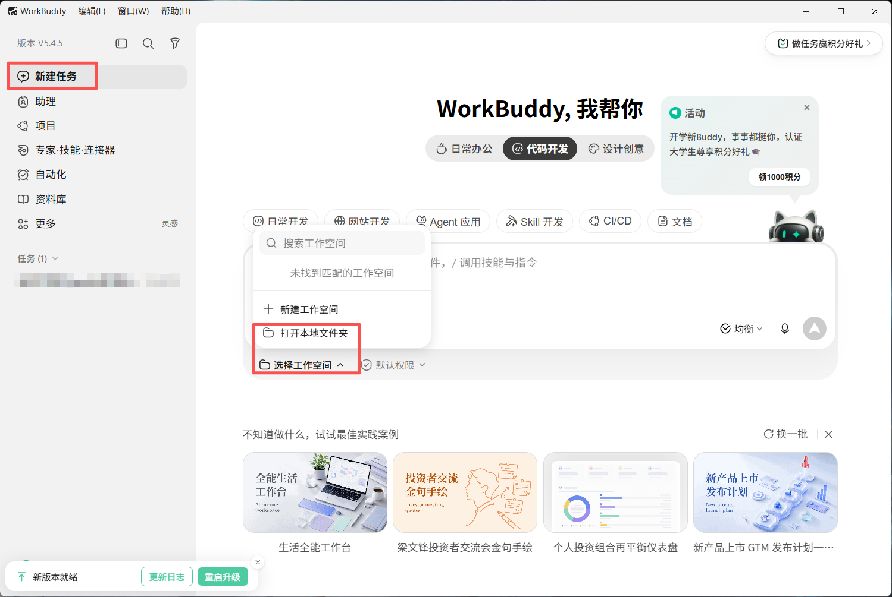
🧯 这一步可能遇到的问题
- WorkBuddy 里看不到目标文件夹：先确认选择的是本地路径，不是“最近文件”里的快捷入口；再检查账号或系统是否弹出了文件访问授权。
- 项目建好了，但 Agent 说 input 是空的：让它原样输出“当前项目绝对路径”和“当前可见文件列表”。最常见原因是选中了同名目录，或者只创建了项目却没有把文件复制进去。
- 误选了整个 D 盘：不要继续执行。关闭当前项目，重新选择
HP-S1-L01，避免 Agent 扫描无关文件。
✅ 恢复标准：Agent 报出的项目路径以 HP-S1-L01 结尾，并且列出的 Word 数量与资源管理器一致。
⌨️ 第 4 步：把任务一次性交代完整
把下面这段指令直接发给 Agent：
请在当前项目中完成一次 Word 材料汇总任务。
输入位置：input 文件夹中的全部 .docx 文件。
输出位置：output 文件夹。
请完成：
1. 逐份读取 Word 文档，不遗漏文件；
2. 为每份文档提取：文件名、标题、日期、主题、三条核心信息、行动事项、负责人、截止日期；
3. 原文没有的信息写“未提及”，不要猜测或补写；
4. 生成 output\Word材料汇总.xlsx，一份文档至少对应一行；
5. 另生成 output\处理说明.md，记录读取了哪些文件、哪些字段缺失、是否遇到无法解析的内容；
6. 完成后自行检查：文件数量是否一致、Excel 是否能打开、表头是否完整、缺失信息是否被明确标记；
7. 不修改 input 中的任何原文件。
开始前，先告诉我你准备访问哪些文件、创建哪些文件，以及是否需要额外权限。这段指令不靠复杂的提示词技巧，而是把一个任务所需的六样东西说清楚了：
目标＋输入位置＋输出位置＋处理规则＋禁止事项＋验收标准以后让 Agent 写报告、整理表格、修改代码，也可以继续使用这个结构。不要先替它手工搬材料；先把材料放在哪里、结果要放在哪里说清楚。
🧯 这一步可能遇到的问题
- Agent 只在对话框里给出一张表，没有创建 Excel：明确补充：“不要只在对话中展示结果，必须在
output中创建真实的.xlsx文件，并在完成后返回文件路径。” - Agent 一直追问格式细节：告诉它按指令中的字段先完成第一版，无法确定的信息统一写“未提及”，不要因为次要格式阻塞任务。
- 某份 Word 无法解析：不要让它跳过后假装全部完成。要求在
处理说明.md中记录文件名、失败现象和已尝试的方法，再继续处理其余文件。 - 它擅自上网补资料：本任务只允许依据
input。立即要求停止外部检索，并删除无法回到原文定位的补充内容。
✅ 恢复标准：Agent 明确复述输入、输出、禁止事项和验收标准，并开始操作本地文件，而不是继续泛泛讨论。
🔐 第 5 步：看清楚权限，再允许执行
Agent 可能会申请读取文件、创建文件或执行命令。不要一路点击“允许”，先看它准备做的事情是否仍在本课目录内：
- 读取
input：符合任务； - 写入
output：符合任务； - 修改
input原文件：不符合任务； - 访问整个用户目录或其他磁盘：先拒绝，并让它解释原因；
- 上传材料到外部服务：先确认材料是否允许上传，以及产品如何处理数据。
权限不等于麻烦的弹窗。它是在告诉你：Agent 即将从“回答问题”进入“操作电脑”。正确做法不是一律拒绝，也不是全部允许，而是只开放完成当前任务所需的最小范围。
🧯 这一步可能遇到的问题
- 没有出现授权提示：不代表一定有问题。先让 Agent 汇报它当前采用的是只读、受限还是可写模式，并尝试在
output创建一个测试文件。 - 每一步都反复要求授权：先检查授权范围是否只对单次命令生效。可以对本课目录授予本次任务所需权限，但不要为了省事永久开放整个磁盘。
- 提示“只读”“sandbox”或“permission denied”：把完整提示交给 Agent，让它指出具体是哪个路径、哪项操作被拒绝；不要只回复“权限都给你了”。
- Agent 想安装软件或依赖：先问清用途、安装位置和是否能用现有能力完成。安装新依赖不是普通文件读写，不要无条件批准。
✅ 恢复标准：Agent 可以读取 input、写入 output，但不能访问任务之外的目录，也不会修改原件。
🔎 第 6 步：不要只看它说“完成了”
任务结束后，直接打开 output。最小正常结果应该是：
output\
├── Word材料汇总.xlsx
└── 处理说明.md然后打开 Excel，至少抽查下面五件事：
input中的每份 Word 是否都有对应记录；- 表头是否完整；
- 日期、姓名和数字是否能在原文中找到；
- 原文没有的字段是否写成“未提及”；
处理说明.md是否如实记录了无法读取或字段缺失的情况。
文件已经生成，只能证明 Agent 执行过；内容通过抽查，才能证明任务完成了。
🧯 这一步可能遇到的问题
- Excel 文件存在，但双击打不开：先检查扩展名是否真的是
.xlsx，再让 Agent 使用表格库重新生成，而不是把 CSV 或文本文件直接改后缀。 - Word 有 5 份，Excel 只有 4 行：让 Agent 对比“输入文件清单”和“输出来源文件列”，找出具体漏掉哪一份，不要接受“可能读取失败”这种模糊解释。
- 负责人、日期看起来很合理，但原文没有：这是最危险的情况。要求所有无法定位的字段改为“未提及”，并增加“来源文件”列；随机抽查姓名、日期和数字。
- Excel 内容正确但格式很乱：不要自己调列宽。要求 Agent 冻结首行、设置筛选、自动列宽、开启长文本换行，并保持原始内容不变。
✅ 恢复标准：两个输出文件都能打开；每份 Word 都有记录；关键事实可以回到原文核对；缺失信息没有被补写。
🔁 第 7 步：结果不合格，让 Agent 自己返工
如果 Excel 漏了一份文档，不要自己补一行。把证据交还给 Agent：
当前结果没有通过验收。
现象：Excel 中有 4 行，但 input 文件夹中有 5 个 Word 文档。
证据：缺少的文件名是……
要求：先判断遗漏原因，只修复这个问题，不修改已经正确的字段。
修复后重新检查文件数量，并在处理说明中记录原因和结果。你在这里练习的不是“挑 AI 毛病”，而是 Agent 工作中最重要的反馈方式：
现象＋证据＋修复范围＋重新验收这才是“人越懒，AI 越勤快”的正确用法：人不接手返工，但必须给出证据，并坚持让 Agent 做到验收通过。
🧯 如果 Agent 连续两次修不好
- 先让它停止继续覆盖文件，把当前正确结果另存为
Word材料汇总-已核验.xlsx； - 要求它解释失败原因，并列出证据，不要立即开始第三次盲改；
- 如果是推理或长文档理解问题，切换更强模型；如果是图片读不到，切换多模态模型；
- 如果是文件权限或路径问题，换模型通常没有用，应先修复环境；
- 只重做出错部分，禁止重新生成已经核验正确的全部内容。
✅ 真正结束的标准：不是 Agent 说“已修复”，而是你重新执行了同一套验收，问题没有复现。
🧩 六、做完案例，再回头看你刚刚用到了什么
现在你已经实际经历了 Agent 的五个核心环节：
- 工作区：
HP-S1-L01告诉它任务围绕什么展开； - 任务对象：它直接读取 Word，并创建 Excel 和 Markdown；
- 工具调用：它需要调用文档解析和表格生成能力，而不只是输出一段文字；
- 权限控制：它在读取、写入或执行前说明准备做什么；
- 结果核验：它先自检，再接受你的抽查和返工要求。
这就是为什么我不把“能聊天、能生成 PPT”直接等同于 Agent。真正的 Agent 不是陪你把每一步聊完，而是接住一个任务，把原本断裂的执行环节连接起来，并留下可以继续使用的结果。
就在修改这节课时，我又遇到了一次很典型的 Agent 任务：飞书命令行工具更新失败，电脑里似乎同时存在两个安装位置。我没有自己逐个目录翻找，而是把现象和目标交给 Agent 排查。
它最后发现电脑里实际存在三份安装：系统默认调用的还是旧版，D 盘有两份新版；同时，普通受限环境读取不到 Windows 凭据，所以即使权限已经申请完成，也会表现得像“没有登录”。它随后指定正确的程序路径，重新验证授权，并成功读取到飞书课程第 657 版。
我提供问题、范围和目标，它负责搜索环境、比较版本、验证猜想并拿结果回来。真正省下来的不是一次点击，而是整条排查链。
💳 七、WorkBuddy 用积分，其他 Agent 还可能怎样付费
💳 刚才的 WorkBuddy 案例只涉及积分：你购买或获得一定积分，不同模型和任务按照产品规则消耗积分，不需要自己配置 API Key。
离开 WorkBuddy 后，你还会遇到两种常见方式：
1. 套餐、积分或额度制
你按月或按周期购买一个档位，在规定额度内使用。优点是预算容易理解，重度使用时可能更划算；缺点是可能存在每周上限、模型倍率、并发限制和刷新周期。WorkBuddy、TRAE、豆包工作以及部分 Coding Plan 都属于这一类思路。
2. API 按量计费
你先在模型供应商处充值，再按照输入、输出、缓存命中等实际消耗扣费。优点是用多少付多少，也能接入不同 Agent；缺点是长任务、长上下文和反复重试可能快速增加费用。
套餐余额和 API 余额通常不是同一个账户，套餐 Key 与普通 API Key 也可能不能混用。下面这张图展示了两种入口的区别。
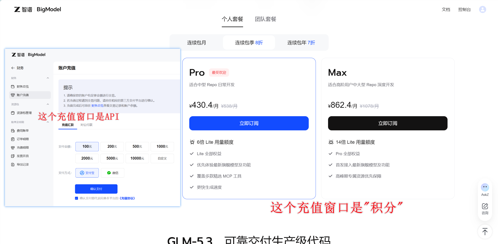
以 ZCode／BigModel 为例，Coding Plan 和普通 API 计费需要分别确认。DeepSeek 主要使用 API 充值；Kimi 和 GLM 等产品则可能同时提供套餐和 API 路线。充值前先确认自己准备用哪个 Agent、哪种模型和哪一种 Key，不要充完以后才发现入口不通。
现阶段，如果想流畅使用Agent工具，基本都需要花钱购买使用额度，毕竟现在AI全产业链成本都在涨价，去年这个时候Trae的免费额度还老多了，今年不充值基本就用不了Agent。但是要记住，免费的才是最贵的，能用钱解决的问题就不是问题，在Agent时代，个人要舍得花钱，企业老板也得舍得花钱，现在就是花钱用Agent的时代。
我个人目前在 Agent 上每月大约花费 200—300 元，这是我的真实使用成本，不是每个人的必需预算。新手可以先用免费额度或最低档完成几次真实任务，再根据消耗决定是否长期付费。
天下没有免费的午餐，但也不要在没跑通第一个任务前，先给五个平台都充值，Agent时代要充钱，但是用什么充什么，因为AI厂商的迭代速度太快了，可能今天这家还最好用，明天就换人了。
✅ 八、本节验收：不是安装成功，而是留下结果
下面五项全部完成，才算跨过第一道 Agent 门槛：
如果你只是安装软件、聊了几句话，却没有留下本地文件，这一课还没有完成。
🧭 写在最后
这一课真正要纠正的，不是你以前选错了哪个 AI 工具，而是我们太容易把 AI 当成一个更聪明的搜索框：问完、复制、关闭，下次再从头来。
公式转换器让我第一次清楚地感受到，AI 可以很聪明，但只要执行链没有接通，人就会一直充当数据线。Agent 的意义，就是把这些原本由人搬运的环节接起来。
海绵朋克我现在会同时使用多个 Agent，主要是为了能随时切换到现阶段最便宜、最好用的模型。但新的问题也随之出现：不同工具的对话并不互通，如果用不同Agent处理同一个任务，甚至我在同一个Agent中如果打开一个新对话，Agent就记不住我之前跟它讨论的内容，很有可能会把好不容易改好的项目弄坏，直接凉凉.....
下一课，我们会用 Git 和 AGENTS.md 解决这个问题：让不同工具、不同会话都能稳定接住同一个项目，而不是每次从零开始。下堂课才是真正会拉开不同人之间 Agent 使用熟练度的内容，请务必关注！